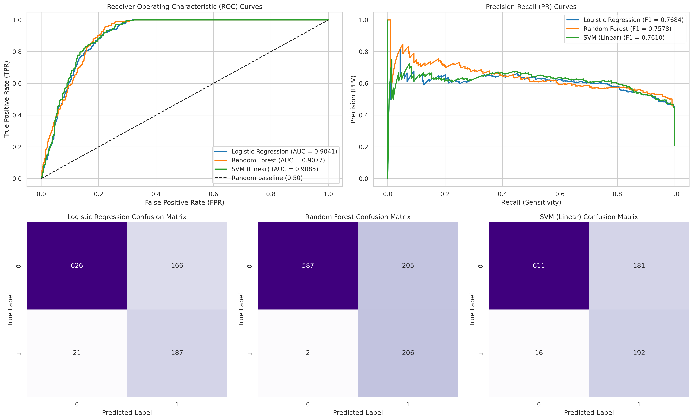

Sephora Products & Skincare Reviews
Our study utilizes the comprehensive Sephora platform data, merging high-dimensional unstructured review texts with product specifications to build structured data models.
Over 8,000 unique cosmetic products paired with approximately 1 million raw customer reviews, presenting an extensive testbed for natural language pipelines.
Comprehensive metadata including brand identity, hierarchical product categories, pricing structures, raw ingredients lists, highlights, and demographic user profiles.
Detailed textual customer reviews reflecting real-world user sentiment, experiences, and specific aspect-driven feedback regarding cosmetic efficacy.
Kaggle Dataset Access Instructions
Due to repository sizing policies, raw source files must be acquired directly from Kaggle. Download the dataset and unpack all files directly inside your local directory at data/raw/.
The Analytical Processing Pipeline
A structured multi-stage data pipeline designed to parse raw data streams, apply NLP features, handle target distributions, and clean features for training.
1. Extract & Merge
Consolidates diverse textual review tables into a unified dataframe, executing cross-relational merges via product_id.
2. Label Binarization
Maps explicit user ratings into distinct target groups: 1–3 Stars → Class 0 and 4–5 Stars → Class 1.
3. Text Cleanse
Purges corrupted, empty, or structurally invalid text string samples, enforcing mathematical data type consistency across all rows.
4. Stratified Subsampling
Extracts a representative, stratified data sample of 5,000 records from the full review pool to optimize computing costs during transformer inference.
5. ABSA Feature Mining
Applies DeBERTa-v3-base-absa to capture fine-grained polarity scores specifically across skin, hair, and general categories.
6. Feature Engineering
Extracts text length features, active ingredient markers, product attributes, and computes customized alignment scores.
7. Class Rebalancing
Executes controlled undersampling workflows on overrepresented target groups to establish perfect 50/50 balance configurations.
Research Questions Breakdown
Detailed experimental results, methodologies, and analytical interpretations across our core research objectives.
ABSA + TF-IDF Fusion
Combines sparse TF-IDF n-gram text fields with deep deep-learning features mined from DeBERTa aspect polarities.
GridSearch Optimization
Evaluated Logistic Regression, Random Forests, and Support Vector Machines across 80/20 train/test splits via GridSearch.
High Predictive Bounds
All tested models demonstrated notable predictive performance, successfully capturing cross-feature rating targets.
Strong Core Signal
The combination of aspect scores and text features uncovers significant predictive patterns in customer satisfaction metrics.
| Target Aspect Category | Data Sample Size | Aspect Extraction Coverage | Mean Model Confidence |
|---|---|---|---|
| General Product Context | 5,000 Reviews | 95.0% | 0.8732 |
| Skin Specific Performance | 5,000 Reviews | 62.0% | 0.8314 |
| Hair Specific Performance | 5,000 Reviews | 24.0% | 0.7945 |
| Evaluated Model Architecture | Balanced Accuracy | Macro F1-Score | ROC-AUC Value | Selection Status |
|---|---|---|---|---|
| Majority Baseline Model | 0.5000 | 0.3012 | 0.5000 | Baseline |
| Logistic Regression | 0.8415 | 0.7684 ★ | 0.8992 | Evaluated |
| Random Forest Classifier | 0.8658 ★ | 0.7512 | 0.9011 | Evaluated |
| Linear Support Vector Machine (SVM) | 0.8602 | 0.7611 | 0.9085 ★ | Final Selection |

visuals/figures/03_model_comparison_panel.png
Product ratings can be predicted accurately using customer review content, aspect-based sentiment information, and product-related attributes. All evaluated models achieved strong predictive performance, with ROC-AUC values above 0.90. Linear SVM achieved the highest ROC-AUC score (0.9085) and was selected as the final prediction model.
Deterministic Alignment Rules
Constructed a conditional mapping profile matching user skin specifications with active formula components (e.g., dry skin with Hyaluronic Acid).
Segment Variance Testing
Partitioned observations into explicit Aligned (1) versus Unaligned (0) segments to isolate variations across mean score groups.
Significant Margin Gains
The subpopulation meeting explicit alignment criteria displayed measurable increases in final product evaluations.
Personalization Benefits
Validates the core hypothesis that target matching profiles positively influence subjective product feedback scores.
| Alignment Profile Assignment | Sample Size (N) | Observed Mean Rating | Net Rating Shift |
|---|---|---|---|
| Profile Aligned (1) | 412 Samples | 3.1231 Stars | +1.3132 Gain |
| Profile Unaligned (0) | 4,588 Samples | 1.8099 Stars | Baseline Scale |
Users tended to give higher ratings to products that were aligned with their personal characteristics. The aligned group achieved an average rating approximately 1.31 points higher than the non-aligned group, indicating a strong positive relationship between user-product compatibility and customer satisfaction.
Multi-Classifier Benchmark
Tested structural performance differences between ensemble learning (Random Forest) and hyperplane division models (SVM).
Undersampled Balancing
Standardized test conditions using precise 50/50 balanced data targets to avoid representation bias across metrics.
Metric-Specific Leaders
Random Forest excelled in raw accuracy balances; Logistic Regression scored high F1 limits; Linear SVM led total ROC areas.
High-Dimensional Robustness
Linear SVM models show superior consistency when handling high-dimensional text fields combined with metadata parameters.
| Target Group Identity | Raw Volume | Raw Share | Balanced Volume | Balanced Share |
|---|---|---|---|---|
| Negative / Neutral Feedback (Class 0) | 3,960 | 79.2% | 832 Samples | 50.0% |
| Positive Efficacy Feedback (Class 1) | 1,040 | 20.8% | 832 Samples | 50.0% |
| Model Configuration | C0 Prec | C0 Rec | C0 F1 | C1 Prec | C1 Rec | C1 F1 |
|---|---|---|---|---|---|---|
| Majority Baseline Configuration | 0.79 | 1.00 | 0.88 | 0.00 | 0.00 | 0.00 |
| Logistic Regression Pipeline | 0.98 | 0.82 | 0.89 | 0.53 | 0.92 | 0.67 |
| Random Forest Ensemble | 1.00 | 0.80 | 0.89 | 0.51 | 0.99 | 0.67 |
| Linear Support Vector Machine | 0.99 | 0.81 | 0.89 | 0.52 | 0.95 | 0.67 |
The comparison shows that all machine learning models substantially outperform the Majority Baseline model. While each model excelled in a different evaluation metric, Random Forest achieved the highest Balanced Accuracy, Logistic Regression achieved the highest Macro F1-Score, and Linear SVM achieved the highest ROC-AUC score. Linear SVM provides the most stable and balanced overall behavior for high-dimensional text classification tasks. Its consistent precision-recall balance and strong generalization performance make it the preferred final model for this project.
Discussion & System Limitations
An objective evaluation of our experimental project findings, operational parameters, and avenues for model improvement.
Our modeling successfully demonstrates that unstructured platform reviews contain strong predictive features for consumer behavior metrics. Integrating specialized sentiment features alongside structured catalog lists improves classification stability.
The practical verification of personalization rules shows clear correlation gains. User satisfaction metrics increase when product features align with personal parameters, proving the value of custom recommendation engines.
Hardware Limits Heavy compute requirements for transformer models limited our training scope to a stratified sample of 5,000 reviews rather than processing all 797,779 database rows locally.
Sample Sparsity Personalized subset checks yielded lower sample counts than standard metadata lines, warranting expanded data scopes in future runs.
Precision Disparities Models showed lower positive-class precision than recall, indicating occasional false-positive classifications for neutral test comments.
Reproducibility Instructions
Follow these sequential environment and script instructions to reproduce our project data pipeline and outputs.
Environment Alignment & Dependency Installation
Clone the core repository and initialize software requirements using standard package managers:
git clone https://github.com/BILGI-IE-423/ie423-2025-2026-termproject-wizards-of-data.git
cd ie423-2025-2026-termproject-wizards-of-data
# Deploy foundational Python library stacks
pip install -r requirements.txt
Pipeline Execution Workflow Order
Run script assets in the specified sequence to build data directories and compile visualization outputs:
python 01_load_data.py
# Pipeline Step 2: Perform data processing and feature engineering
python 02_preprocess_data.py
# Pipeline Step 3: Run hyperparameter optimization and model training
python 03_model_training.py
# Pipeline Step 4: Evaluate final models and automatically output tables and figures
python 04_model_evaluation.py
Project Workspace Code Hub
Review raw analytical code, feature generation scripts, and database assets on our GitHub repository:
github.com/BILGI-IE-423/ie423-2025-2026-termproject-wizards-of-data